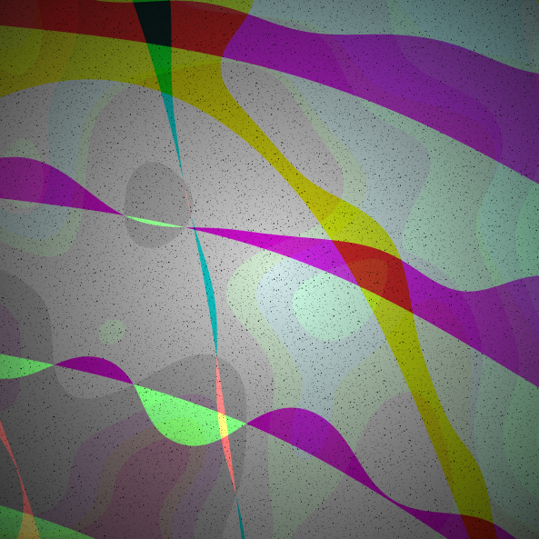
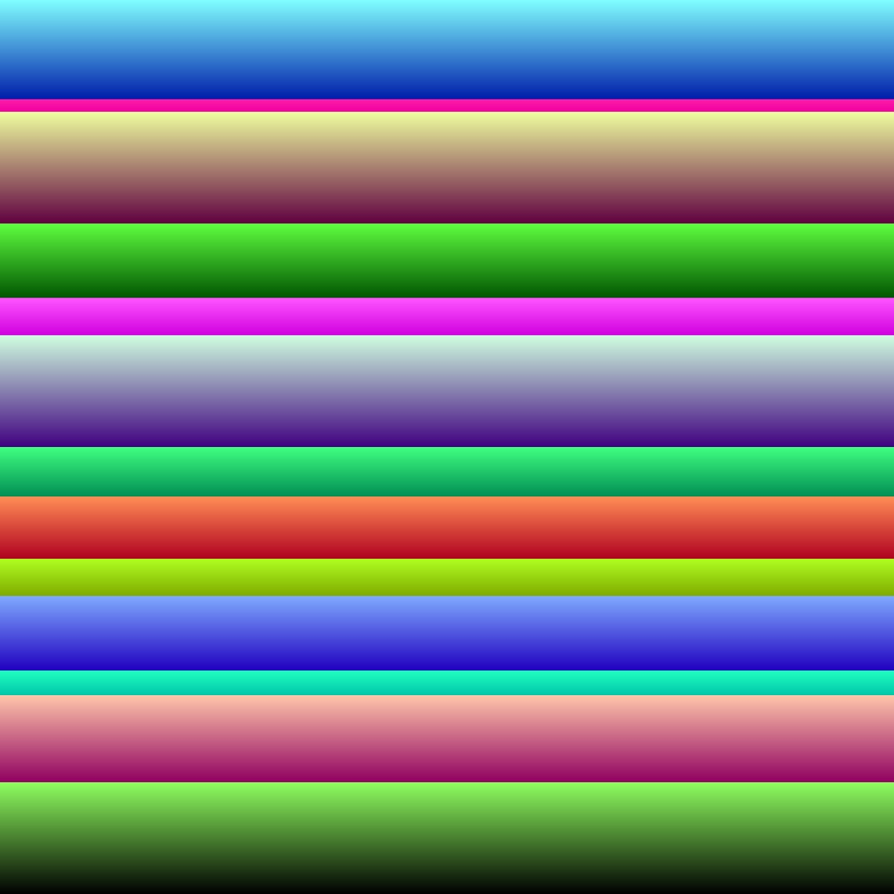
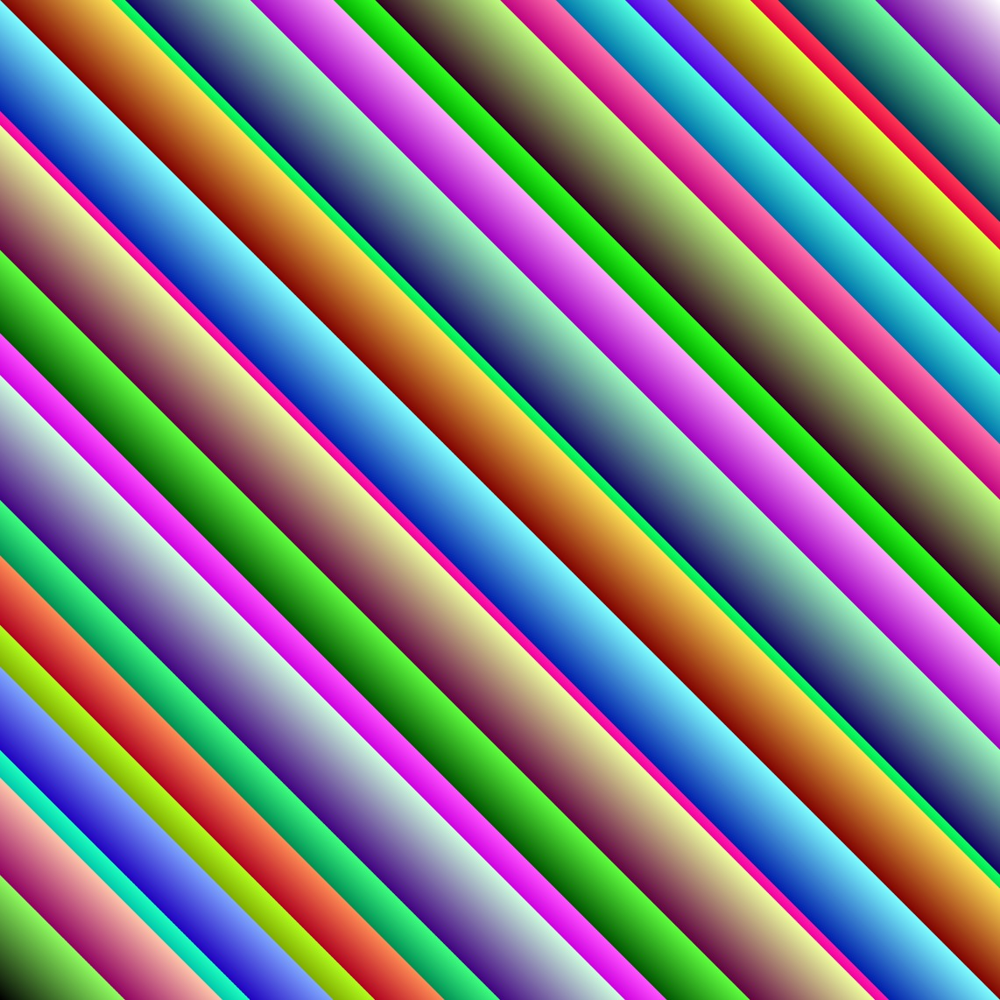

From Ramps To Image
Diary of a generative NFT journey
-

- 
Sample outputs from this project
The fxHash link
Even if I've recently moved to analog ahesthetic, I’ve never lost interest in digital processes, when I create not fully abstract pieces, I often generate sources with 3D tools for my analog explorations, for example here in Mani.
I chose to use shader programming for this project because it allows me to work directly with pixels and use an approach much more similar to analog synthesis, which is far from common procedures in computer graphics.
Here I’ve explored the use of a specific analog approach to video synthesis: the ramps. And I've used the concept of modulation, which can be translated to: altering the outcome of a function through the output of another function.
First, I created a shader capable of generating vertical and horizontal ramps. Ramps are basic building blocks in analog video synthesis; if you are familiar with audio synthesis is possible to see them as sawtooth oscillators locked to the timing of the horizontal line or the timing of the frame, with the same frequency of the clock they are locked to.
I wanted to be able to play with these horizontal ramps altering their frequeny, this permits me to generate vertical and horizontal patterns, like a classic video oscillator.
How to call the function
ramp( lock, scale )


At this point, these ramps can be scaled differently on each color channel (read they can have a different frequency on each color channel), this allows me to create color patterns using a single ramp, below you can see a vertical locked ramp with different colors in the first image. ramp(st.y, vec3(4.5, 8., 3.))
The second image below shows two ramps (horizontal and vertical) added together. ramp(st.y, vec3(4.5, 8., 3.)) + ramp(st.x, vec3(4.5, 8., 3.))
- 
At this point is interesting to play with the first parameter of the ramp function, for example is possible to pass st.x * st.y. (By the way, st is the normalized screen space)
Or other kind of altered locks. At this point I’ve decided to think at this first parameter as a “space” parameter, even if it’s single dimensioned. And I’ve created the first function that is directly controlled by fxHash random numbers.
This function returns an interpolated value between different altered spaces. It’s ugly but it does its job.
The first image is a sample of st.x * st.y space, the second is st.x + st.y, the third uses a texture space altered with a noise function, the fourth is an example of noise.
- 
The space interpolator
Now it's time to spend a week adjusting the logic that manage the random numbers, add more details like a noisy grain, randomly make light veins appear, dynamically adjust brightness and contrast and make their values interdependent, reduce color resolution by deliberately introducing some banding effect, and of course that's not possible nowadays produce an image without vignetting, every Camera Raw user knows.
Three steps of the output composition
The fxHash link